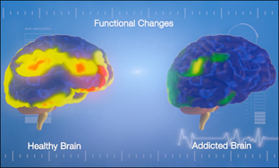

In the following visualization you will be asked questions regarding opioid use disorder
Opioid use disorder – is a severe change that occurs in a persons brain function over time and increases the desire to use. Neuroscientists have concluded that opioid use disorder
is a chronic brain disease that changes the biological structures of the brain. The disorder decreases one’s ability to resist the
impulse to take opiates – despite the harmful consequences to the individual and to those around him or her.
In the United States in 2014 there was an estimated 1.9 million people with an opioid use disorder
